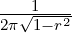

5 Cumulative distribution Functions
The functions related to this chapter are declared in pnl/pnl_cdf.h.
For various distribution functions, we provide functions named pnl_cdf_xxx where xxx is
the abbreviation of the distribution name. All these functions are based on the same
prototype
- which If which=1, it computes p and q. If which=2, it computes x. For higher values
of which it computes one the parameters characterizing the distribution using all the
others, p, q, x.
- p the probability ∫
xdensity(u)du
- q = 1 - p
- x the upper bound of the integral
- status an integer which indicates on exit the success of the computation. (0) if calculation
completed correctly. (-I) if the input parameter number I was out of range. (1) if the
answer appears to be lower than the lowest search bound. (2) if the answer appears to
be higher than the greatest search bound. (3) if p + q≠1.
- bound is undefined if STATUS is 0. Bound exceeded by parameter number I if STATUS
is negative. Lower search bound if STATUS is 1. Upper search bound if STATUS is 2.
- void pnl_cdf_bet (int *which, double *p, double *q, double *x, double *y, double
*a, double *b, int *status, double *bound)
Description Cumulative Distribution Function BETA distribution.
- void pnl_cdf_bin (int *which, double *p, double *q, double *x, double *xn, double
*pr, double *ompr, int *status, double *bound)
Description Cumulative Distribution Function BINa distribution.
- void pnl_cdf_chi (int *which, double *p, double *q, double *x, double *df, int
*status, double *bound)
Description Cumulative Distribution Function CHI-Square distribution.
- void pnl_cdf_chn (int *which, double *p, double *q, double *x, double *df, double
*pnonc, int *status, double *bound)
Description Cumulative Distribution Function Non-central Chi-Square distribution.
- void pnl_cdf_f (int *which, double *p, double *q, double *x, double *dfn, double
*dfd, int *status, double *bound)
Description Cumulative Distribution Function F distribution.
- void pnl_cdf_fnc (int *which, double *p, double *q, double *x, double *dfn, double
*dfd, double *pnonc, int *status, double *bound)
Description Cumulative Distribution Function Non-central F distribution.
- void pnl_cdf_gam (int *which, double *p, double *q, double *x, double *shape,
double *rate, int *status, double *bound)
Description Cumulative Distribution Function GAMma distribution. Note that the
parameter rate is 1/scale. The density writes f(x) = 1∕(saΓ(a))xa-1e-x∕s with scale=s
and shape=1/rate=a.
- void pnl_cdf_nbn (int *which, double *p, double *q, double *x, double *xn, double
*pr, double *ompr, int *status, double *bound)
Description Cumulative Distribution Function Negative BiNomial distribution.
- void pnl_cdf_nor (int *which, double *p, double *q, double *x, double *mean,
double *sd, int *status, double *bound)
Description Cumulative Distribution Function NORmal distribution.
- void pnl_cdf_poi (int *which, double *p, double *q, double *x, double *xlam, int
*status, double *bound)
Description Cumulative Distribution Function POIsson distribution.
- void pnl_cdf_t (int *which, double *p, double *q, double *x, double *df, int *status,
double *bound)
Description Cumulative Distribution Function T distribution.
- double pnl_cdfchi2n (double x, double df, double ncparam)
Description Compute the cumulative density function at x of the non central χ2
distribution with df degrees of freedom and non centrality parameter ncparam.
- void pnl_cdfbchi2n (double x, double df, double ncparam, double beta, double *P)
Description Store in P the cumulative density function at x of the random variable
beta *X where X is non central χ2 random variable with df degrees of freedom and non
centrality parameter ncparam.
- double pnl_normal_density (double x)
Description Normal density function.
- double pnl_cdfnor (double x)
Description Cumulative normal distribution function.
- double pnl_cdf2nor (double a, double b, double r)
Description Cumulative bivariate normal distribution function, returns
 ∫
-∞a ∫
-∞be-
dxdy.
- double pnl_inv_cdfnor (double x)
Description Inverse of the cumulative normal distribution function.